29 Oct 2026. EA-1 and WS-1 (presenter), EA-2 and WS-2 (faceless creator tip). Everything below is real: rendered cast and keyframes, real library and dashboard captures in the motion template, and real voice samples. No video has been generated yet; this page is the gate before production.
Narrator for the faceless ads (pick one)
The first 25 s of EA-2, read in the professor register by three ElevenLabs voices. Each was transcribed: all three read the script word for word. A fourth (Roger) added a sentence of its own, so it was dropped.
Paul: deep, steady, the most lecture-likeDrew: warm, conversational, a touch youngerAlexandra: calm woman's voice, natural and clear
The presenter ads do not use these: Ellen and Marcus speak inside their own video takes, so the voice sits on the lips.
EA-1Presenterabout 78 s
The Brand Brain lesson
A calm lecturer explains why AI forgets your brand, and how one Brand Brain read by sixteen agents fixes it.
Cast and set
Ellen: 48 year old North American woman, slender, oval face, fair skin with soft smile lines, shoulder-length ash-brown hair with a few grey strands tucked behind one ear, hazel eyes, tortoiseshell reading glasses pushed up on her head, small pearl stud earrings. Wears oatmeal knit cardigan over a plain white tee. Voice: Ellen, a North American woman in her late forties, warm low-mid voice, unhurried and thoughtful, like a favourite business-school lecturer, a gentle smile in the voice.
identity card (every take uses it)
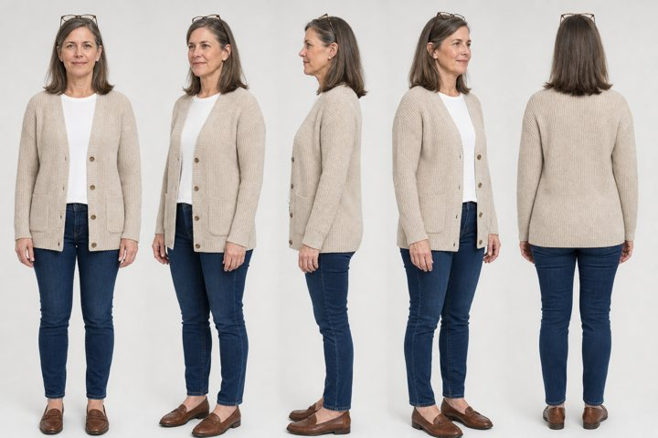
turnaroundexpressions
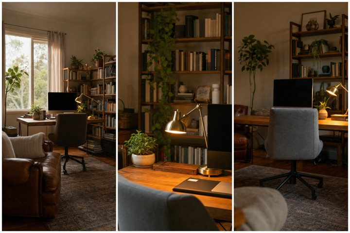
the set
Keyframes
K1 Ellen leans slightly toward the lens mid-sentence, eyebrows lifted, a quietly amused knowing lookK2 Ellen asks a question with one palm turned up, a small warm frownK3 Ellen counts lightly on her fingers, thoughtfulK4 Ellen explains calmly, gesturing with an open hand toward the empty space on the rightK5 Ellen smiles warmly into the lens and points down toward the bottom of the frame
How it looks on screen
Full frame for the human moments, then the real product takes the top of the frame and the presenter moves to a circle. Both come from the same takes, so lip sync never breaks.
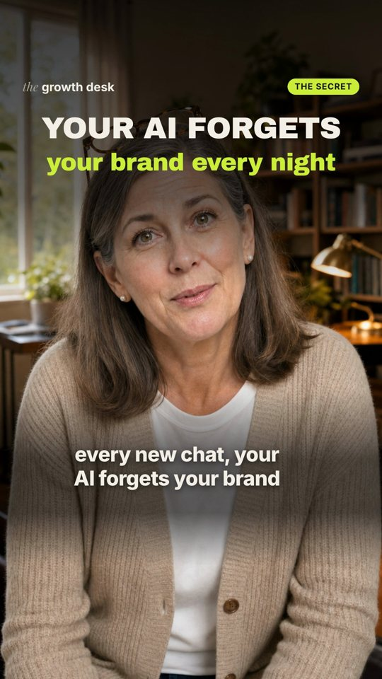
Layout A: full frame, headline on top, caption band
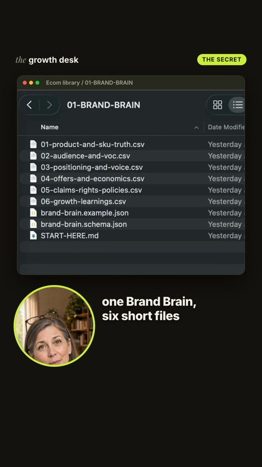
Layout B: real screen card, presenter in a circle
Three hooks (only one plays per cut)
H1: hook option 1 (puzzle), keyframe K1"Here's something most store owners never notice: every new chat, your AI forgets your brand entirely." (curious, quietly amused, leaning in slightly, stress on forgets)
H2: hook option 2 (puzzle), keyframe K2"Have you ever wondered why AI writes your store's copy like everyone else's?" (genuinely puzzled, warm, a small frown, palm up as if asking the class)
H3: hook option 3 (call-out), keyframe K3"Your store needs help with about sixteen jobs. AI could cover most of them, so why doesn't it?" (thoughtful, counting lightly on her fingers, the question asked gently)
Timeline after the hook (every line, with delivery)
Time
Unit
Line and delivery
9 to 11.5
B1
"It comes down to context." calm, measured, a small knowing nod
12.3 to 21
B1
"A good marketer carries your brand in their head: who buys from you, how you speak, what you promised last month." warm, explaining, an open hand toward the side
21.8 to 25.5
B1
"A chat window starts from nothing, every single time." matter-of-fact, slightly rueful
26.4 to 38
B1
"So the fix is to give it a memory: one Brand Brain, six short files about your products, customers, voice and offers." brightening, clear, unhurried, stress on memory
38.8 to 45
B2
"Then sixteen agents read it before they begin, each built for one job." clear, steady, explaining
45.8 to 56
B2
"One audits your product pages like a careful consultant. One drafts ad briefs in your voice. One plans the emails that bring customers back." warm, gently listing, a small pause after each one
56.8 to 65.5
B2
"They run inside ChatGPT or Claude, and nothing goes live until you've approved it." reassuring, calm, stress on approved
66.2 to 70.2
C
"It's called Ecom Agent OS." warm, clear, a little proud
70.9 to 75.5
C
"One download, no monthly fee. The full list of agents is just below." friendly, relaxed, a warm smile, glancing down toward the bottom of the frame
Graphics over the takes
21.8 s: a neutral chat window empties as she says it starts from nothing; Ellen moves to a circle bottom left
26.4 s: real Brand Brain library recording, highlight walks down the six files
38.8 s: Brand Brain hub, 16 agent tiles light up; then the real agents recording with highlights on Store Audit, Ad Creative, Retention and their output cards
61 s: chat output with an Approve step and a 'You approve' check stamp (sound: stamp)
70.9 s: end card slides up: product mark, swappable price unit, link below
Generation units (Seedance 2.5 face, native speech)
Unit
Length
Takes
Why
H1
10 s
2
hook option 1 (puzzle)
H2
8 s
2
hook option 2 (puzzle)
H3
10 s
2
hook option 3 (call-out)
B1
30 s
2
context and the Brand Brain, no product name
B2
28 s
2
sixteen agents, three examples, you approve
C
11 s
3
the name and the close, a short unit so the brand word can be re-rolled
Sound: her voice and quiet room tone only; none in the takes; count-up ticks and the approval stamp are added with the graphics in the edit. Music: one warm, gentle, slightly curious acoustic and soft piano bed under her voice, ducked low, rising a touch for the close. CTA on screen: 16 agents · ₹699 once · ecomagents.ai (price layer swappable).
EA-2Faceless creator tip
Someone packaged sixteen agents
About 65 s at the estimated professor pace (the template re-times itself to the real voice). Real library captures in every card; the chat is a neutral replica for a fictional candle store, Harbor & Pine. The logo appears only when the narration names the product. Price is its own layer on the end card.
Three hooks, plus the motion test of H1 (silent)
H1 motion, 6 s
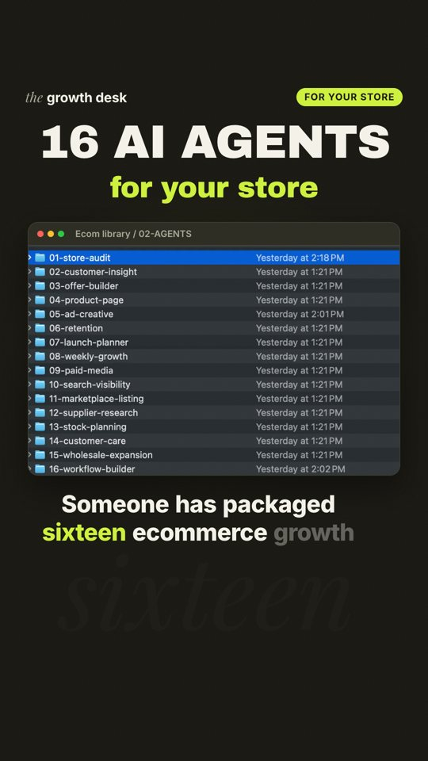
HOOK-H1 "Someone has packaged sixteen ecommerce growth agents into a single download, and they run inside the AI assistant you already use."
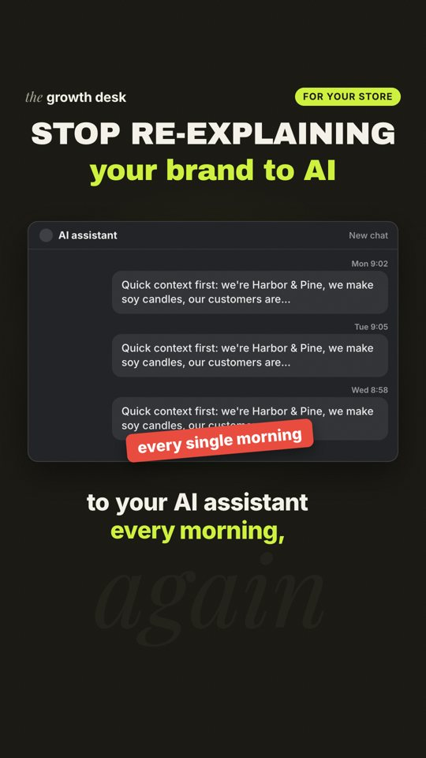
HOOK-H2 "If you find yourself explaining your brand to your AI assistant every morning, there's a far better way to set this up."
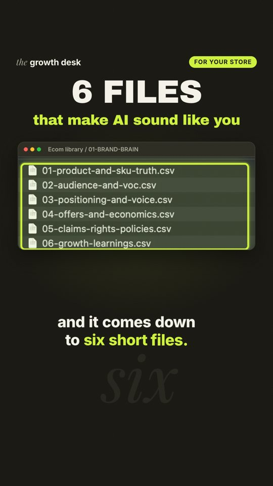
HOOK-H3 "There's a small trick that makes AI write as if it actually knows your brand, and it comes down to six short files."
The body, beat by beat (stills at each beat's settled moment)
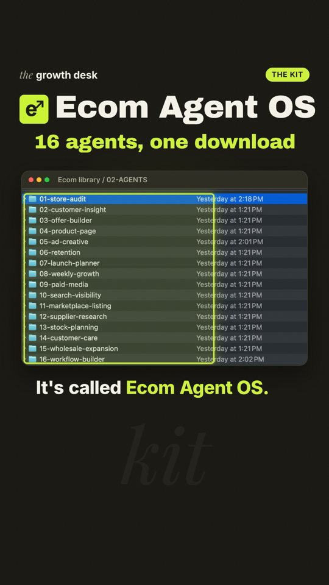
9.3 to 12.2 s "It's called Ecom Agent OS." real library capture: agents-navigation-v3 (02-AGENTS folder, 16 agents)
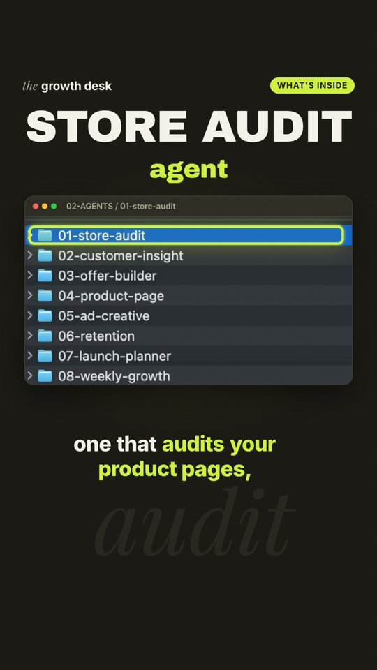
12.2 to 20.1 s "Inside, there's an agent for nearly every growth job a store has: one that audits your product pages," real library capture: agents-navigation-v3 (02-AGENTS folder, 16 agents)
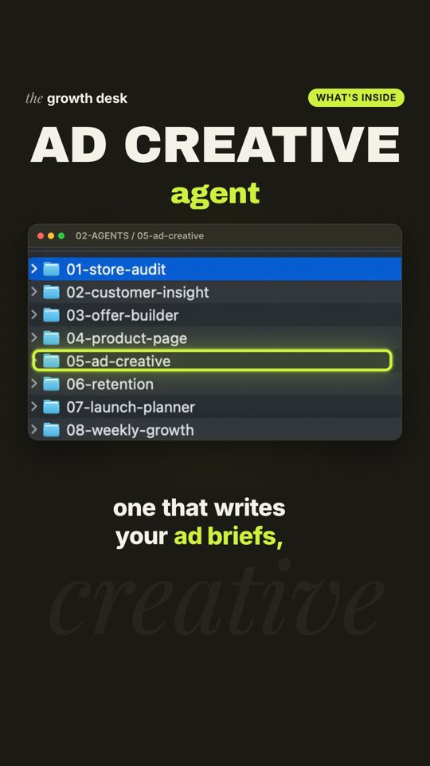
20.1 to 23.2 s "one that writes your ad briefs," real library capture: agents-navigation-v3 (02-AGENTS folder, 16 agents)
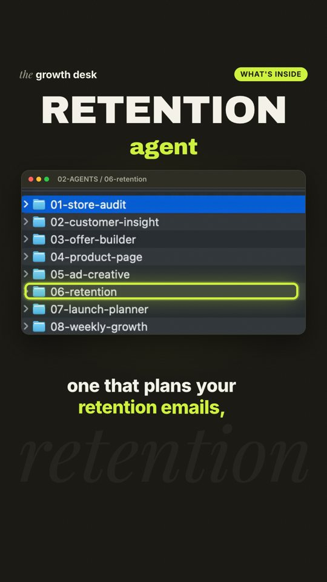
23.2 to 26.6 s "one that plans your retention emails," real library capture: agents-navigation-v3 (02-AGENTS folder, 16 agents)
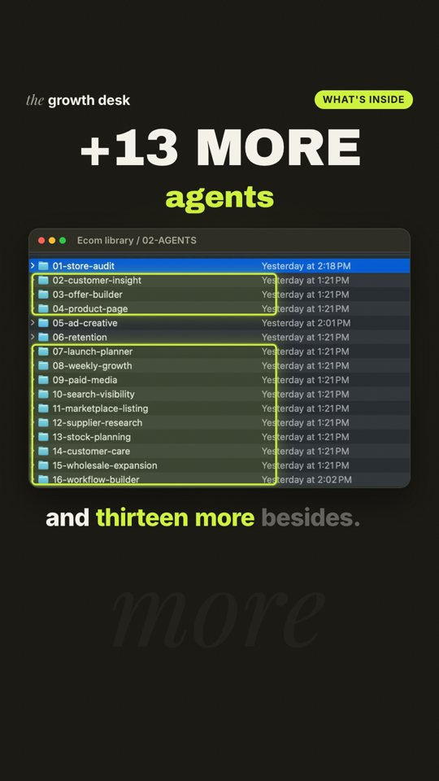
26.6 to 29.3 s "and thirteen more besides." real library capture: agents-navigation-v3 (02-AGENTS folder, 16 agents)
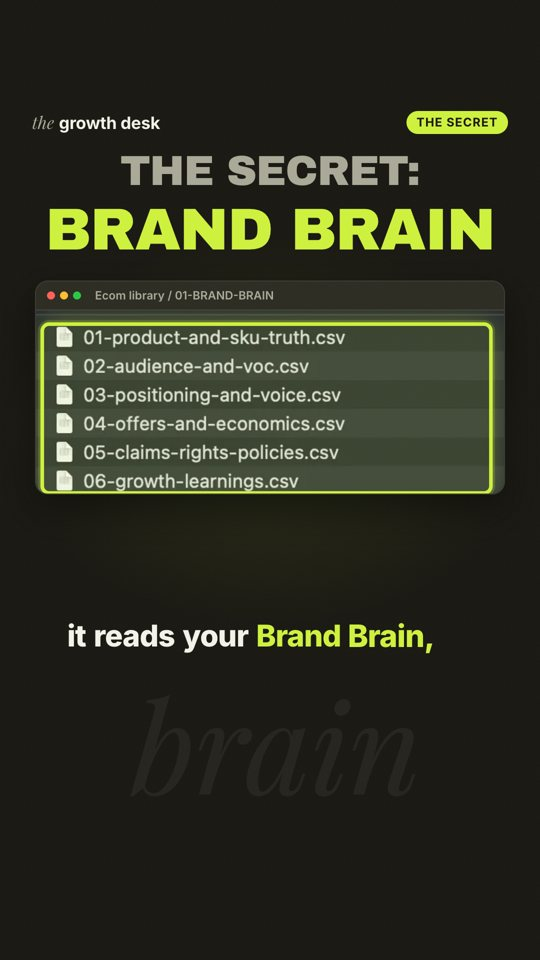
29.3 to 36.6 s "The clever part is what they share. Before any agent starts, it reads your Brand Brain," real library capture: brain-navigation-v3 (01-BRAND-BRAIN, 6 CSV files)
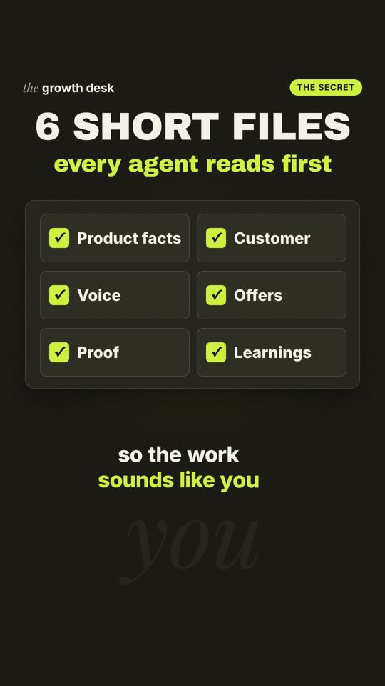
36.6 to 46.4 s "six short files describing your products, your customers and your voice, so the work sounds like you rather than like everyone else." motion graphic checklist (six Brand Brain files, site ledger names)
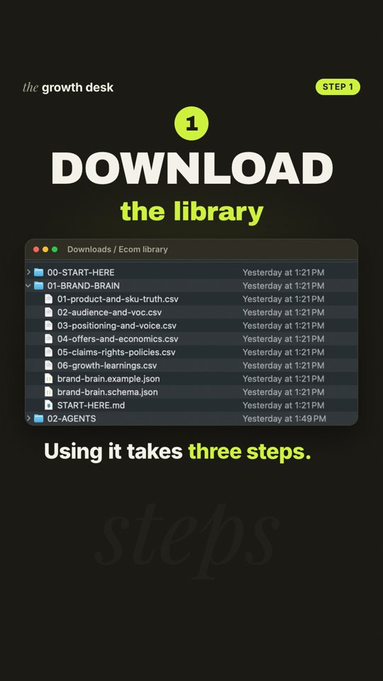
46.4 to 50.8 s "Using it takes three steps. Download the library," real library capture: brain-navigation-v3 first frame (library root)
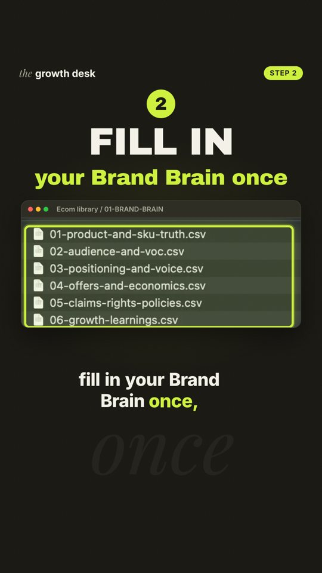
50.8 to 53.9 s "fill in your Brand Brain once," real library capture: brain-navigation-v3 (01-BRAND-BRAIN, 6 CSV files)
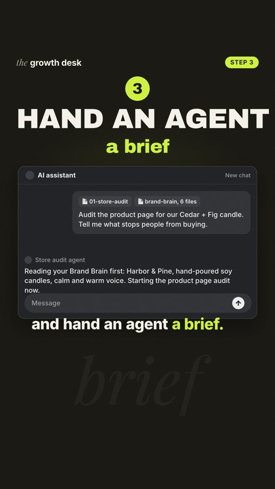
53.9 to 57 s "and hand an agent a brief." neutral chat replica (no third-party chrome), fictional store Harbor & Pine
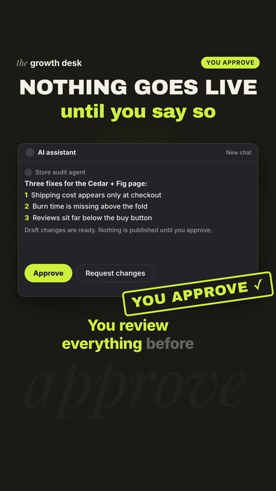
57 to 61 s "You review everything before it goes anywhere." neutral chat replica with Approve step, fictional store Harbor & Pine
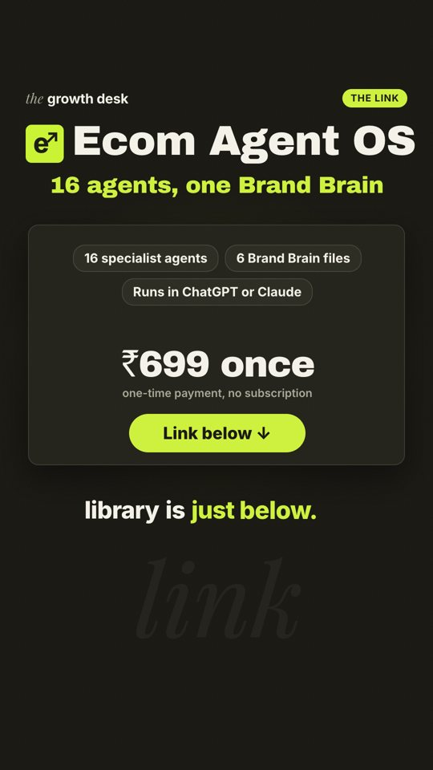
61 to 65.2 s "The link to the full library is just below." end card; price is its own layer
Sound: the narrator, one low continuous bed, count-up ticks and the approval stamp. Nothing else.
WS-1Presenterabout 78 s
Why some ads run for a year
A former media buyer explains what long-running ads share, and how a library of 1,169 of them becomes copy-paste recipes.
Cast and set
Marcus: 38 year old North American man, medium build, square jaw, warm light-brown skin, close-cropped dark hair, a neat short beard, dark brown eyes, a small nick through his left eyebrow. Wears charcoal henley with the sleeves pushed up, a simple steel watch. Voice: Marcus, a North American man in his late thirties, calm warm baritone, unhurried and curious, like a patient teacher, a smile in the voice.
identity card (every take uses it)
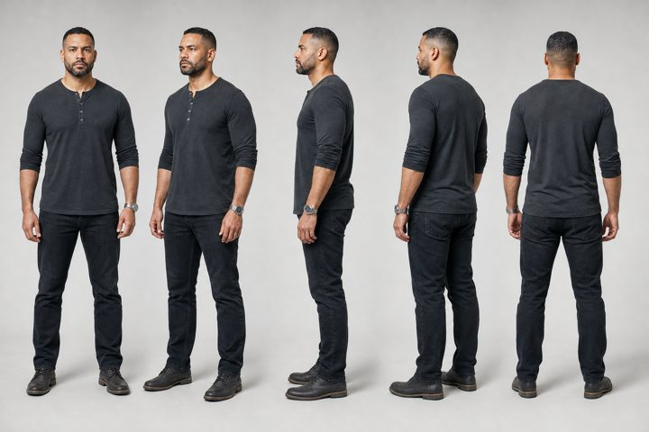
turnaround
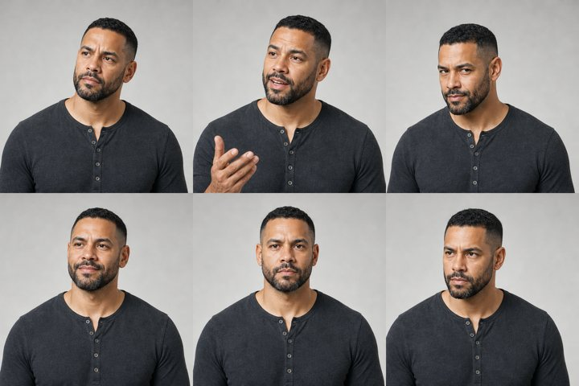
expressions
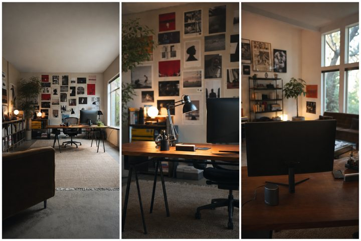
the set
Keyframes
K1 Marcus mid-question, eyebrows raised, a little amusedK2 Marcus gestures with an open hand toward the empty space on the right, quietly confidentK3 Marcus leans in slightly toward the lens as if sharing a secretK4 Marcus counts three points on his fingers, calmK5 Marcus smiles warmly into the lens and points down toward the bottom of the frame
How it looks on screen
Full frame for the human moments, then the real product takes the top of the frame and the presenter moves to a circle. Both come from the same takes, so lip sync never breaks.
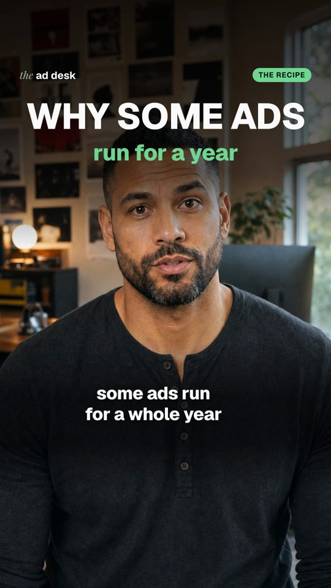
Layout A: full frame, headline on top, caption band
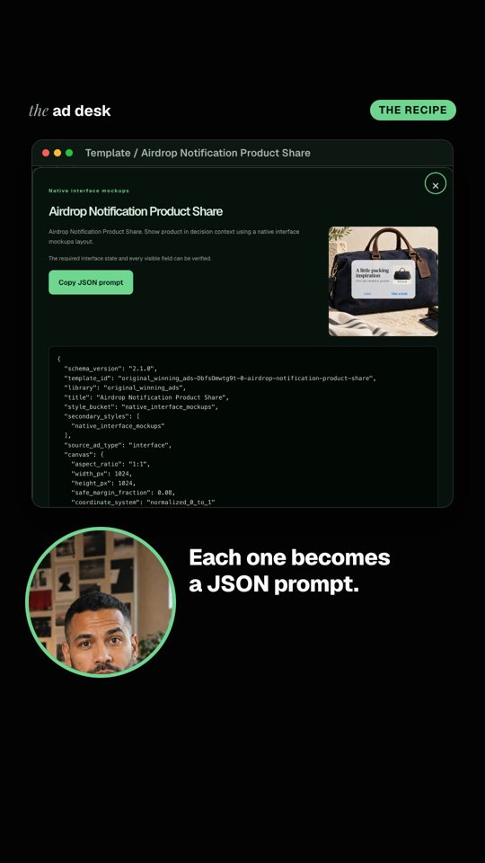
Layout B: real screen card, presenter in a circle
Three hooks (only one plays per cut)
H1: hook option 1 (puzzle), keyframe K1"Have you noticed some ads run for a whole year, while yours get switched off after a week?" (curious, a little amused, eyebrows raised, stress on whole year)
H2: hook option 2 (proof first; the finished ad appears as a graphic beside him), keyframe K2"This ad began as one product photo and a short paragraph. Let me show you the recipe." (warm, quietly confident, gesturing to the empty space at his side)
H3: hook option 3 (discovery), keyframe K3"Someone collected over a thousand ads that kept running the longest, and turned each one into a recipe." (conspiratorial, warm, leaning in slightly)
Timeline after the hook (every line, with delivery)
Time
Unit
Line and delivery
9 to 18.5
B1
"Ads that keep running usually share a structure: a layout, a hook and an offer that each do their job." calm, explaining, counting the three on his fingers
19.3 to 33.5
B1
"This library studies ads like that: winners creators shared in public, long-running ads from more than five thousand online stores, and the layouts ad tools use." steady, clear, unhurried, a small pause at each comma
34.3 to 37.5
B1
"Each one becomes a JSON prompt." simple, a small smile
38.5 to 48
B2
"That sounds technical, but it's really just written instructions: where the product sits, what the headline says, how it should feel." reassuring, warm, an open hand
48.8 to 57.5
B2
"You pick a template, copy its prompt, and paste it into ChatGPT with a photo of your product." clear, relaxed, miming the three small steps
58.3 to 64.5
B2
"What comes back is your product, in a structure that has already worked." quietly pleased, stress on already worked
65.5 to 72
C
"It's called Winning Statics: eleven hundred and sixty-nine templates, new ones every week, and you pay once." warm, clear, unhurried
72.7 to 75
C
"The link is just below." friendly, a warm smile, glancing down toward the bottom of the frame
Graphics over the takes
9 s: a library ad card with three labelled highlight boxes: layout, hook, offer; Marcus in a circle bottom left
19.3 s: three sources tick in over the real template grid scrolling
38.5 s: real template dialog, JSON lines translate into plain English labels
48.8 s: real Copy JSON prompt click and Copied state, then the neutral chat window with a product photo, then the finished ad
65.5 s: 1,169 count-up, 100+ styles and weekly drops chips, end card with a swappable price unit (sound: tick)
Generation units (Seedance 2.5 face, native speech)
Unit
Length
Takes
Why
H1
10 s
2
hook option 1 (puzzle)
H2
9 s
2
hook option 2 (proof first; the finished ad appears as a graphic beside him)
H3
10 s
2
hook option 3 (discovery)
B1
30 s
2
what long-running ads share, the three sources, JSON prompt; no product name
B2
27 s
2
what a JSON prompt is, the three steps, the result
C
11 s
3
the name and the close, a short unit so the brand words can be re-rolled
Sound: his voice and quiet room tone only; none in the takes; count-up ticks and the approval stamp are added with the graphics in the edit. Music: one warm, light, curious bed with soft keys and brushed percussion under his voice, ducked low, lifting a touch for the close. CTA on screen: 1,169 templates · ₹1,169 once · bundle.winningstatics.com (price layer swappable).
WS-2Faceless creator tip
1,169 winning ads as recipes
About 64 s at the estimated professor pace. Real dashboard captures (grid, template dialog before and after Copy JSON prompt), real library ads, and the real candle photo and the ad generated from it.
Three hooks, plus the motion test of H1 (silent)
H1 motion, 6 s
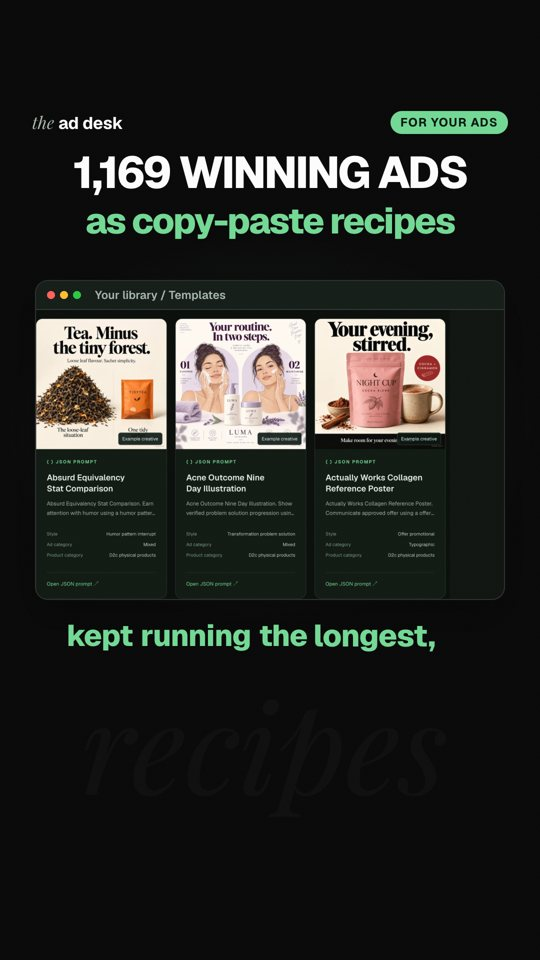
HOOK-H1 "Someone collected the ads that kept running the longest, and turned all 1,169 of them into prompts you can copy and paste."
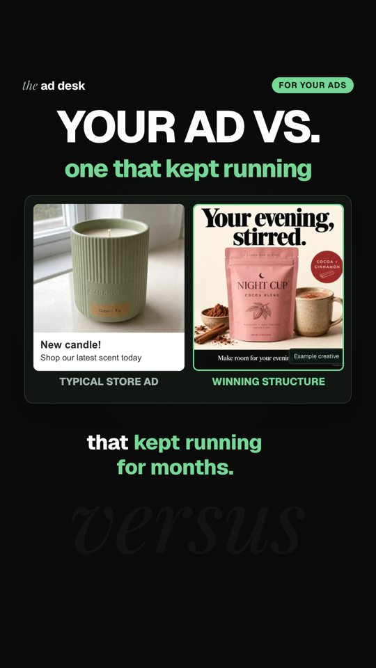
HOOK-H2 "On the left is a fairly typical store ad. On the right is one that kept running for months. Let me explain what the second one is doing differently."
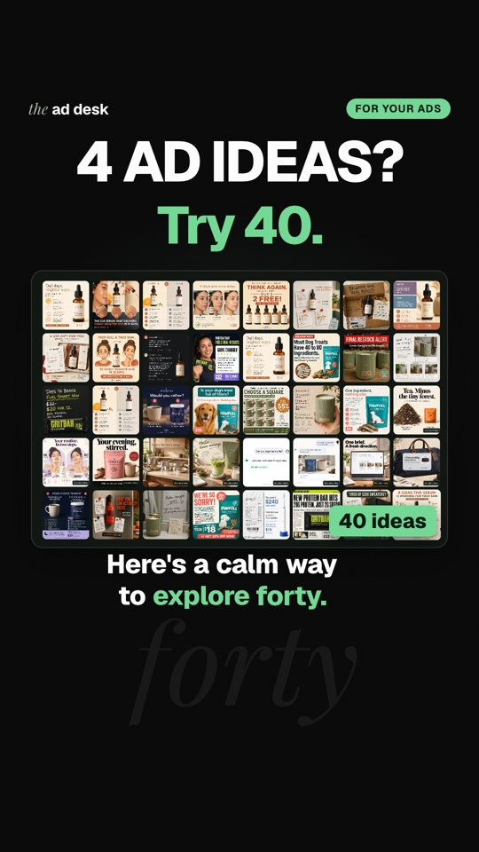
HOOK-H3 "Most of us can think of four or five ad ideas before we run dry. Here's a calm way to explore forty."
The body, beat by beat (stills at each beat's settled moment)
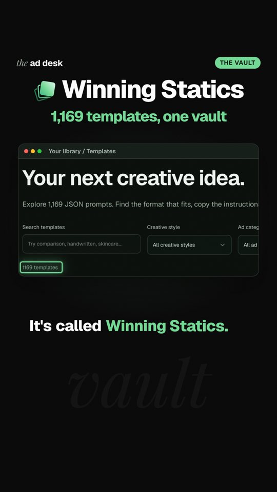
9.2 to 12 s "It's called Winning Statics." real dashboard capture 14 Oct: template grid (mgkit grid.jpg)
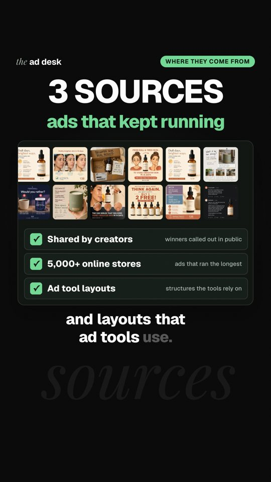
12 to 24.9 s "Every template in it began as an ad that kept running: winners creators shared publicly, long-running ads from more than five thousand online stores, and layouts that ad tools use." real store ads from the landing page Source 2 wall (mgkit wall) + checklist
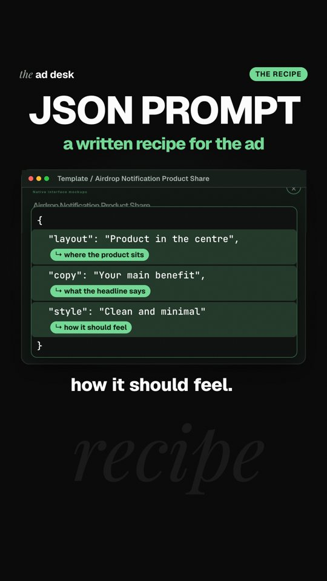
24.9 to 37.3 s "Each one has been turned into a JSON prompt, which is simply a written recipe for the ad: where the product sits, what the headline says, how it should feel." landing page JSON prompt example (layout/copy/style) over the real template dialog
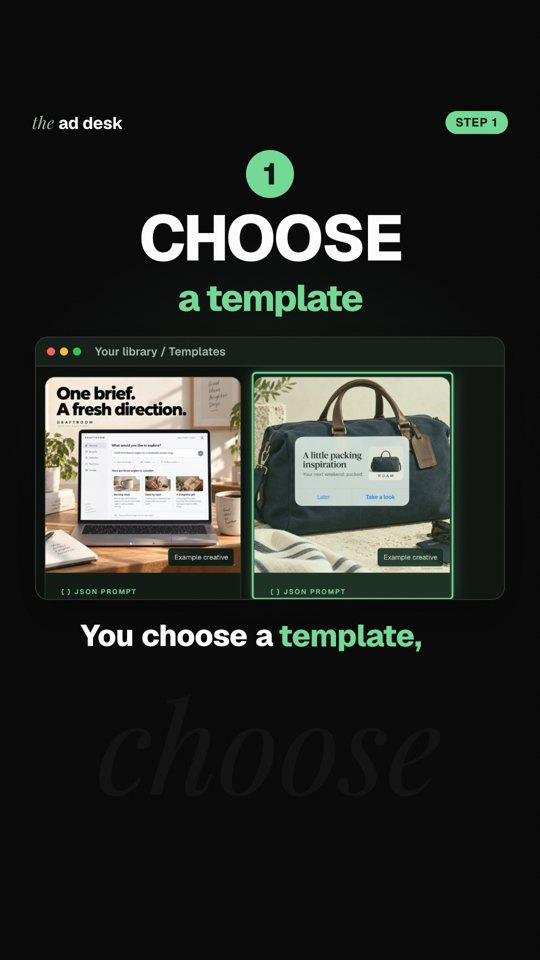
37.3 to 39.8 s "You choose a template," real dashboard capture 14 Oct: template grid (mgkit grid.jpg)
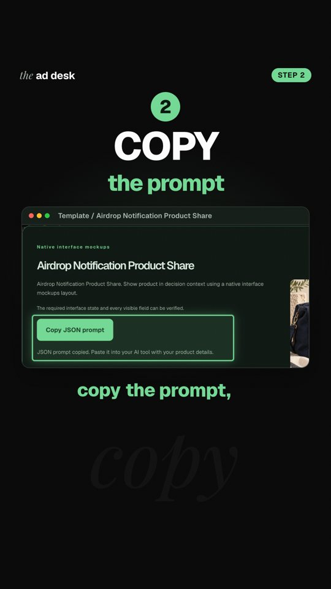
39.8 to 41.9 s "copy the prompt," real dashboard capture 14 Oct: template dialog after Copy JSON prompt
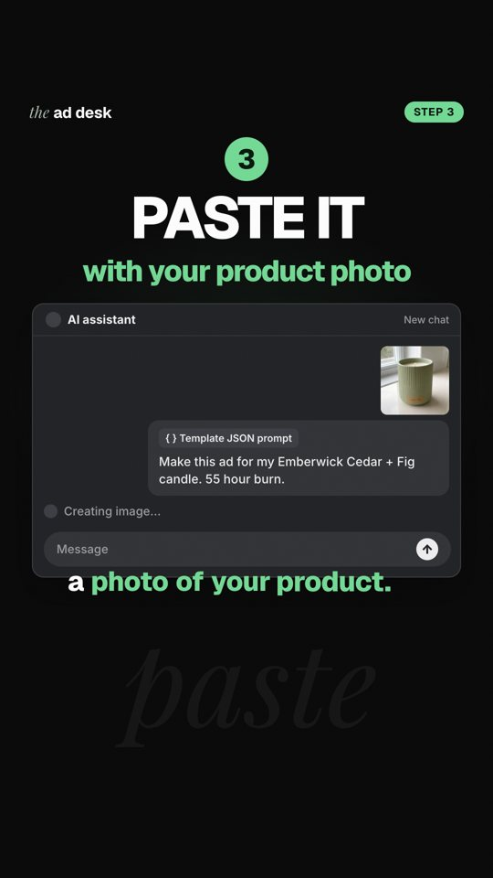
41.9 to 46.9 s "and paste it into ChatGPT with a photo of your product." neutral chat replica + real demo product photo (Emberwick candle, phonephoto.jpg)
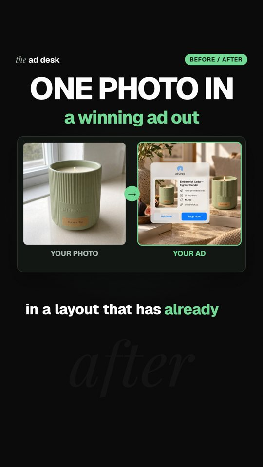
46.9 to 54.5 s "What comes back is your product, in a layout that has already done its job for someone else." real demo product photo -> real generated library ad (airdrop.jpg; shows demo price ₹1,299 inside the image)
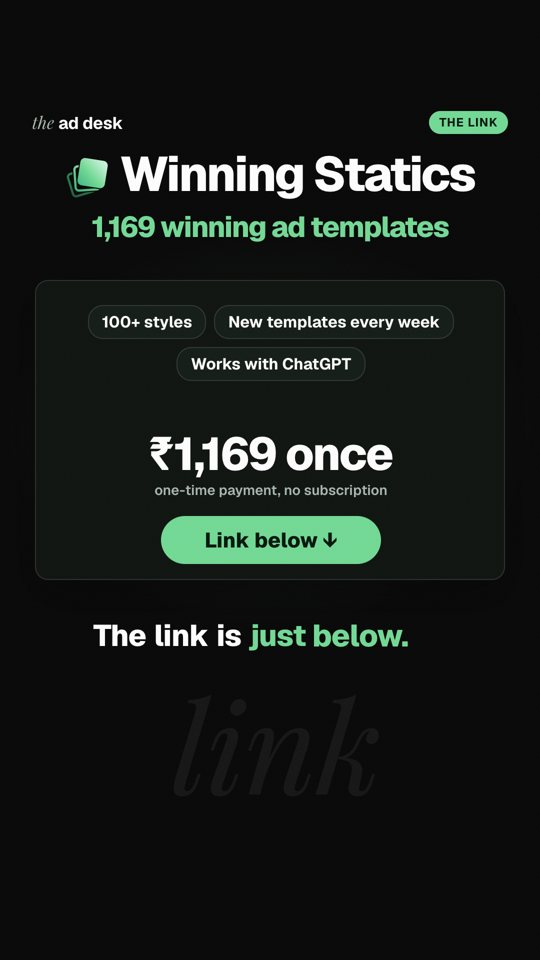
54.5 to 63.5 s "There are over a hundred styles, new templates every week, and a single one-time price. The link is just below." end card; price is its own layer
Two fixes I'll make in production: the generated candle ad in the before and after shows a price inside the picture (₹1,299), and one tile in hook H3 shows $42. I'll swap both for library examples with no price in them.
Hook H2 wording: the right-hand image is a library example built on a long-running structure, not the original long-running ad. I'd reword the line to keep it exact: "On the left is a fairly typical store ad. On the right is the same kind of product, in a structure that has kept ads running for months."
Cost and what happens on approval
Spent so far: about $3.50 (18 storyboard renders, the voice audition, transcripts).
Production estimate:
EA-1 and WS-1: 97 s of generation each if one take per unit lands (about $26 each), up to 205 s with the planned second takes and three takes of the brand-name close (about $57 each). Plus about $1 of music each.
EA-2 and WS-2: narration and music only, about $2 each including retakes.
Total: about $56 if first takes land, up to about $118 with every planned retake. Only the takes used in the final cuts count as the ads' cost.
What I need: approve the storyboards (all four, or name changes), and pick the narrator for EA-2 and WS-2. On approval I generate the presenter takes first (the long body units), check every transcript and frame, then build all four cuts with three hook versions each and a 30 to 45 s cutdown.
Runs: ecomagents-ads/cine/runs/ea1-brand-brain and cinematic-ads-harness/runs/ws1-run-a-year (plan.json, keyframes). Motion template: reels-sb/mg (HyperFrames).